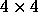

Next: ParametersClasses, and Associations
Up: Data Distribution
Previous: Sky Coverage
Figure 3 summarizes the data products for imaging and
spectroscopy, the three database servers we use to present these products to
the astronomical community, and the user interfaces we have developed to help
astronomers work with the data effectively. The data products described below
are:
- Image Parameters: the positions, fluxes, and shapes of all detected objects;
- Spectroscopic Parameters: the redshift, spectral classification,
and detected lines of each spectrum;
- Color Images: JPEG images constructed from the g, r and i
imaging data;
- Images: FITS image files of the corrected frames
(§ 3.5) in five bands; a mask which records how each pixel was used
in the imaging pipelines;  binned images of the corrected frames
after detected objects have been removed; ``atlas'' images, which include all
significant pixels around each detected object; and a GIF image of each
spectrum, with features identified;
- Spectra: the flux- and wavelength-calibrated, sky-subtracted
spectra, with error and mask arrays;
- Other Data Products: the number of objects loaded in
the databases, summaries of observing conditions for imaging fields and for
spectroscopic plates, and a variety of others.
Michael Strauss
Thu Jan 30 11:15:34 EST 2003